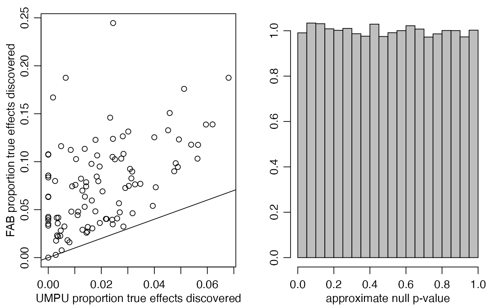

exampleHMM.RmdThis is a simulation study in which adaptive FAB \(p\)-values are constructed using a Gaussian hidden Markov model as a linking model. A binary hidden Markov model is the “true” linking model. This document serves as the replication code for the example in Section 3.4 of the article “Smaller \(p\)-values via indirect information” (Hoff 2019).
Here are some \(p\)-value functions:
#### ---- p-value functions
## -- FAB p-values
pFAB<-function(y,sigma,etheta=0,vtheta=1){
c(1-abs( pnorm( (y+2*etheta*sigma^2/vtheta)/sigma ) - pnorm(-y/sigma) ))
}
## -- UMPU p-values
pUMPU<-function(y,sigma){
c(2*pnorm(-abs(y)/sigma ))
}
## -- BH FDR control procedure
rejectBH<-function(pvals,fdr=.1){
pc<-cbind(sort(pvals),fdr*(1:length(pvals))/length(pvals))
nd<-max( c(0, suppressWarnings(which(pc[,1]<pc[,2])) ) )
order(pvals)[seq(1,nd,length=nd)]
}Here is a function that estimates the parameters in the linking model:
## -- mle from Gaussian hidden Markov model
mleGHMM<-function(y){
suppressWarnings( fit<-arima(y,c(1,0,1)) )
## TSA4 page 98
phi<-fit$coef[1] ; theta<-fit$coef[2] ; mu<-fit$coef[3]
sw2<-fit$sigma2
v<-sw2*(1+2*theta*phi+theta^2)/(1-phi^2)
w<-(1+theta*phi)*(theta+phi)/( phi*(1+2*theta*phi+theta^2) )
rho<-phi
sigma2<-v*(1-w)
psi2<-v*w
x<-c(sigma2,mu,psi2,rho)
names(x)<-c("sigma2","mu","psi2","rho")
gam<-c(x[2]*(1-x[4]),x[4],sqrt(x[3]*(1-x[4]^2)),sqrt(x[1]))
names(gam)<-c("beta0","beta1","tau","sigma")
gam
}Here is a function that computes an estimated conditional expectation and variance for the mean at location \(j\) given the data at the other locations:
## -- function to find conditional mean under linking spatial regression model
cdistGHMM<-function(beta0,beta1,tau,sigma,r){
w<-2*r+1
d<-abs(outer(1:w,1:w,"-"))
C<-(beta1^d)*tau^2/(1-beta1^2)
iC<-solve(C)
G<-diag(w)[-(r+1),]
V<-solve( iC+t(G)%*%G/sigma^2 )
b0<-c(V%*%( iC%*%(rep(beta0/(1-beta1),w) ) ))[r+1]
b1<-(V%*%t(G)%*%G)[r+1,]/sigma^2
list(b0=b0,b1=b1,vtheta=V[r+1,r+1])
}Here is the simulation study:
#### ---- HMM parameters
TP<-rbind( c(.975,.025,.0), c(.01,.99,.01), c(0,.025,.975))
sigma<-1
#### ---- other parameters
p<-1000
fdr<-.2
r<-50
#### ---- simulation study
EFAB<-XFAB<-UMPU<-pXNULL<-NULL
for(s in 1:100){
#### ---- generate data
set.seed(s)
theta<-0
for(j in 2:p){theta<-c(theta,sample(c(-1,0,1),1,prob=TP[theta[j-1]+2,])) }
y<-rnorm(p,theta,sigma)
#### ---- UMPU p-values
pU<-pUMPU(y,sigma)
dU<-rejectBH(pU,fdr)
UMPU<-rbind(UMPU,c( sum(theta[setdiff(1:p,dU)]==0), sum(theta[dU]==0),
sum(theta[setdiff(1:p,dU)]!=0), sum(theta[dU]!=0) ) )
#### ---- obtain eBayes means using single estimate of HMM params
hmm<-mleGHMM(y)
pripar<-cdistGHMM(hmm[1],hmm[2],hmm[3],hmm[4],r)
etheta<-NULL
for(i in 1:p){
ii<-seq(i-r,i+r) ; ii[ii<1]<-1 ; ii[ii>p]<-p
etheta<-c(etheta, pripar$b0 + sum(pripar$b1*y[ii]) )
}
pX<-pFAB(y,sigma,etheta,pripar$vtheta)
dX<-rejectBH(pX,fdr)
XFAB<-rbind(XFAB,c( sum(theta[setdiff(1:p,dX)]==0), sum(theta[dX]==0),
sum(theta[setdiff(1:p,dX)]!=0), sum(theta[dX]!=0) ) )
pXNULL<-c(pXNULL,pX[theta==0] )
#### ----- exact FAB p-values
mstheta<-NULL
for(i in 1:p){
ymi<-replace(y,i,NA)
if(i==1){ ymi<-ymi[-1] }
if(i==p){ ymi<-ymi[-p] }
hmm<-mleGHMM(ymi)
pripar<-cdistGHMM(hmm[1],hmm[2],hmm[3],hmm[4],r)
ii<-seq(i-r,i+r) ; ii[ii<1]<-1 ; ii[ii>p]<-p
mstheta<-rbind(mstheta,c(pripar$b0 + sum(pripar$b1*y[ii]),pripar$vtheta ))
}
pF<-pFAB(y,sigma,mstheta[,1],mstheta[,2])
dF<-rejectBH(pF,fdr)
EFAB<-rbind(EFAB,c( sum(theta[setdiff(1:p,dF)]==0), sum(theta[dF]==0),
sum(theta[setdiff(1:p,dF)]!=0), sum(theta[dF]!=0) ) )
cat(s,"\n")
}## 1
## 2
## 3
## 4
## 5
## 6
## 7
## 8
## 9
## 10
## 11
## 12
## 13
## 14
## 15
## 16
## 17
## 18
## 19
## 20
## 21
## 22
## 23
## 24
## 25
## 26
## 27
## 28
## 29
## 30
## 31
## 32
## 33
## 34
## 35
## 36
## 37
## 38
## 39
## 40
## 41
## 42
## 43
## 44
## 45
## 46
## 47
## 48
## 49
## 50
## 51
## 52
## 53
## 54
## 55
## 56
## 57
## 58
## 59
## 60
## 61
## 62
## 63
## 64
## 65
## 66
## 67
## 68
## 69
## 70
## 71
## 72
## 73
## 74
## 75
## 76
## 77
## 78
## 79
## 80
## 81
## 82
## 83
## 84
## 85
## 86
## 87
## 88
## 89
## 90
## 91
## 92
## 93
## 94
## 95
## 96
## 97
## 98
## 99
## 100Save results:
colnames(EFAB)<-colnames(XFAB)<-colnames(UMPU)<-
c("D0E0","D1E0","D0E1","D1E1")
save(EFAB,XFAB,UMPU,pXNULL,file="resultsHMM.RData")Results:
## FDP
Ufdp<-mean( UMPU[,2]/(pmax(UMPU[,4]+UMPU[,2],1) ))
Ffdp<-mean( EFAB[,2]/(pmax(EFAB[,4]+EFAB[,2],1) ))
Xfdp<-mean( XFAB[,2]/(pmax(XFAB[,4]+XFAB[,2],1) ))
## Proportion of discoveries made - power - prob disc given true disc
EPOW<-EFAB[,4]/pmax(1,EFAB[,3]+EFAB[,4])
XPOW<-XFAB[,4]/pmax(1,XFAB[,3]+XFAB[,4])
UPOW<-UMPU[,4]/pmax(1,UMPU[,3]+UMPU[,4])
round(mean(UPOW),3) ## [1] 0.02## [1] 0.077## [1] 3.851542Plots:
par(mfrow=c(1,2),mar=c(3,3,1,1),mgp=c(1.75,.75,0))
plot(UPOW,EPOW,xlab="UMPU proportion true effects discovered",
ylab="FAB proportion true effects discovered")
abline(0,1)
hist(pXNULL,main="",xlab="approximate null p-value",ylab="",prob=TRUE,
col="gray")